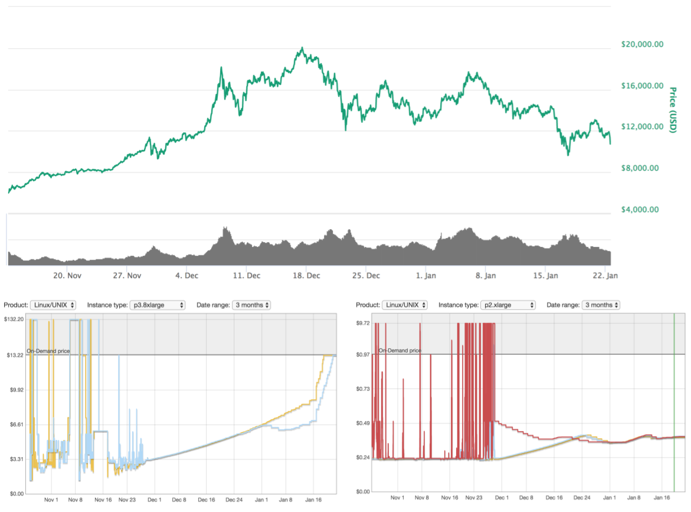
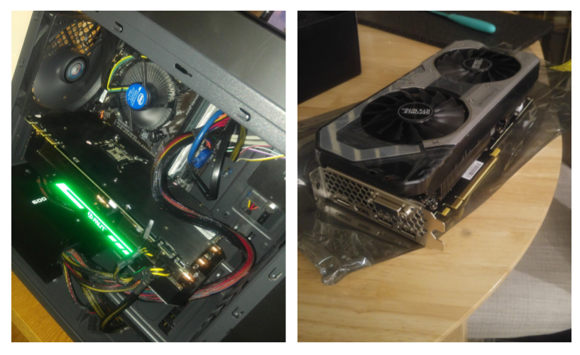
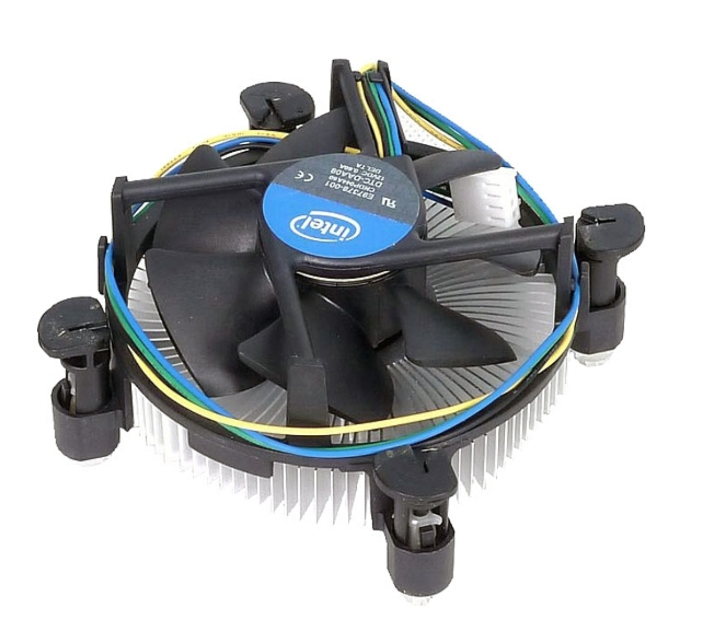

- Sun 21 January 2018
- Machine Learning
- #tensorflow, #aws, #cuda, #convnets, #convolutional neural networks, #machine learning, #python, #keras
During the last 18 months I spent a lot of time reading about Deep Learning and experimenting in various problem
spaces where these techniques can be applied. As a big fan of cloud computing I relied mainly on AWS and their
p2.xlarge spot instances to run my Deep Learning experiments. I automated almost everything using cloudformation and
I could have my GPU/Compute instance up and running in a couple of minutes. More recently and as the cryptocurrency madness
was taking off I realised that I had to increase my spot instance bidding price almost on a daily basis.

I checked the spot instance pricing charts on AWS and realised that there was huge fluctuation of the prices. I'm not sure it's definitely the case but there might be some correlation between the current value of Bitcoin and the AWS EC2 spot instance prices. I would expect Amazon to aim for a spot price that makes p2/p3 instances not profitable for miners otherwise it would be very difficult to make resources available for other, more meaningful, purposes like AI and other kinds of problem solving.
I would expect Amazon to aim for a spot price that makes p2/p3 instances not profitable for miners
Furthermore, the p2.xlarge I was using, was employing a Tesla K80 GPU which is based on the previous generation Kepler architecture.
After checking a few benchmarks online it was clear that a Pascal architecture GPU with a similar amount of cores and memory
would be probably faster.
The p2.xlarge EC2 instance
The p2.xlarge EC2 instance is a virtual machine with the following specs:
| GPU Count | vCPU Count | Memory | Parallel Processing Cores | GPU Memory |
|---|---|---|---|---|
| 1 | 4 | 61 GiB | 2496 | 12 GiB |
Amazon claims that the p2.xlarge is using a Tesla K80 GPU however this is only half of the story.
The Tesla K80 specs on the nvidia website mention 4992 cuda cores
with a dual-GPU design and 24 GB of GDDR5 memory. Apparently the K80 is based on two GK210 chips on a single PCB
and in the way this particular VM is configured, only one of these chips is available to the user. So to be fair,
with a p2.xlarge you have access to half the resources of a Tesla K80.
Amazon claims that the p2.xlarge is using a Tesla K80 GPU however this is only half of the story
My Server
Long story short, the system consists of the following components:
| Component | Price (GBP) | |
|---|---|---|
| Motherboard | GIGABYTE GA-B250M-DS3H | 58.85 |
| CPU | Intel G4600 | 59.99 |
| RAM | 2 x Ballistix Sport LT 8GB (16GB) | 164.46 |
| PSU | EVGA 600 W1 | 43.21 |
| Storage | Samsung 850 EVO 250 SSD | 82.87 |
| GPU | Palit GeForce GTX 1070 Ti JetStream 8GB GDDR5 | 463.97 |
| Case | Aerocool QS240 M-ATX | 29.99 |
| 903.34 |
The plan was to use a recent platform (Kaby Lake) in order to be as power efficient as possible and have the ability to upgrade components in the future. It was quite difficult to find a GTX 1070 ti in stock online, for the record http://amazon.co.uk didn't have any available.

Taking into account the current price of p2.xlarge spot instance on AWS ($0.38 USD/0.27 GBP per hour) with the money
spent to build my server I could buy 140 days of usage while with the standard price (0.70 GBP per hour) that number would be 54 days.
Power Consumption / Temperatures
The power consumption of the server was tested using a power meter and the results were as follows:
| Idle (W) | Peak Load (W) |
|---|---|
| 27 | 180 |
The GPU temperature under load was 66 degrees Celsius while the CPU never exceeded 50 degrees with the stock cooler.
I was impressed by how small and thin CPU stock coolers are nowadays.

I was impressed by how small and thin CPU stock coolers are nowadays.
GTX 1070 Ti vs Tesla K80
In order to compare the performance of the GTX 1070 ti with (half of) the Tesla K80 used in the p2.xlarge EC2 instance I executed
the same experiment/benchmark on both systems. The experiment was the following:
- A siamese LSTM deep neural network identifying similar or disimillar speakers (binary classification)
- Keras was used for the network definition while Tensorflow was employed as the backend
- 1000 speakers from the Voxceleb dataset were used for training and testing purposes
The execution time was captured using the time command.
GTX 1070 Ti
Train on 300000 samples, validate on 120000 samples
Epoch 1/20
2018-01-21 14:09:02.298955: I tensorflow/core/platform/cpu_feature_guard.cc:137] Your CPU supports instructions that this TensorFlow binary was not compiled to use: SSE4.1 SSE4.2
2018-01-21 14:09:02.483330: I tensorflow/stream_executor/cuda/cuda_gpu_executor.cc:892] successful NUMA node read from SysFS had negative value (-1), but there must be at least one NUMA node, so returning NUMA node zero
2018-01-21 14:09:02.487780: I tensorflow/core/common_runtime/gpu/gpu_device.cc:1030] Found device 0 with properties:
name: GeForce GTX 1070 Ti major: 6 minor: 1 memoryClockRate(GHz): 1.683
pciBusID: 0000:01:00.0
totalMemory: 7.92GiB freeMemory: 7.74GiB
2018-01-21 14:09:02.488319: I tensorflow/core/common_runtime/gpu/gpu_device.cc:1120] Creating TensorFlow device (/device:GPU:0) -> (device: 0, name: GeForce GTX 1070 Ti, pci bus id: 0000:01:00.0, compute capability: 6.1)
- 58s - loss: 0.2104 - accuracy: 0.6624 - val_loss: 0.1836 - val_accuracy: 0.7135
Epoch 2/20
- 54s - loss: 0.1816 - accuracy: 0.7207 - val_loss: 0.1719 - val_accuracy: 0.7361
Epoch 3/20
- 54s - loss: 0.1700 - accuracy: 0.7467 - val_loss: 0.1673 - val_accuracy: 0.7468
Epoch 4/20
- 54s - loss: 0.1620 - accuracy: 0.7614 - val_loss: 0.1658 - val_accuracy: 0.7486
Epoch 5/20
- 54s - loss: 0.1561 - accuracy: 0.7735 - val_loss: 0.1646 - val_accuracy: 0.7515
Epoch 6/20
- 54s - loss: 0.1509 - accuracy: 0.7832 - val_loss: 0.1657 - val_accuracy: 0.7497
Epoch 7/20
- 54s - loss: 0.1462 - accuracy: 0.7921 - val_loss: 0.1662 - val_accuracy: 0.7494
Epoch 8/20
- 54s - loss: 0.1422 - accuracy: 0.8002 - val_loss: 0.1673 - val_accuracy: 0.7494
Epoch 9/20
- 54s - loss: 0.1387 - accuracy: 0.8065 - val_loss: 0.1681 - val_accuracy: 0.7480
Epoch 10/20
- 54s - loss: 0.1353 - accuracy: 0.8138 - val_loss: 0.1691 - val_accuracy: 0.7475
Epoch 11/20
- 54s - loss: 0.1326 - accuracy: 0.8186 - val_loss: 0.1722 - val_accuracy: 0.7439
Epoch 12/20
- 54s - loss: 0.1297 - accuracy: 0.8249 - val_loss: 0.1732 - val_accuracy: 0.7411
Epoch 13/20
- 54s - loss: 0.1273 - accuracy: 0.8292 - val_loss: 0.1778 - val_accuracy: 0.7390
Epoch 14/20
- 54s - loss: 0.1251 - accuracy: 0.8332 - val_loss: 0.1798 - val_accuracy: 0.7371
Epoch 15/20
- 54s - loss: 0.1227 - accuracy: 0.8379 - val_loss: 0.1819 - val_accuracy: 0.7347
Epoch 16/20
- 54s - loss: 0.1206 - accuracy: 0.8412 - val_loss: 0.1824 - val_accuracy: 0.7340
Epoch 17/20
- 54s - loss: 0.1182 - accuracy: 0.8457 - val_loss: 0.1854 - val_accuracy: 0.7322
Epoch 18/20
- 54s - loss: 0.1164 - accuracy: 0.8489 - val_loss: 0.1880 - val_accuracy: 0.7310
Epoch 19/20
- 54s - loss: 0.1148 - accuracy: 0.8510 - val_loss: 0.1893 - val_accuracy: 0.7285
Epoch 20/20
- 54s - loss: 0.1127 - accuracy: 0.8548 - val_loss: 0.1916 - val_accuracy: 0.7264
0.710386092868
real 23m2.315s
user 25m49.500s
sys 8m24.313s
Tesla K80 (p2.xlarge)
Train on 300000 samples, validate on 120000 samples
Epoch 1/20
2018-01-21 14:42:33.663872: I tensorflow/core/platform/cpu_feature_guard.cc:137] Your CPU supports instructions that this TensorFlow binary was not compiled to use: SSE4.1 SSE4.2 AVX AVX2 FMA
2018-01-21 14:42:36.325831: I tensorflow/stream_executor/cuda/cuda_gpu_executor.cc:892] successful NUMA node read from SysFS had negative value (-1), but there must be at least one NUMA node, so returning NUMA node zero
2018-01-21 14:42:36.326197: I tensorflow/core/common_runtime/gpu/gpu_device.cc:1030] Found device 0 with properties:
name: Tesla K80 major: 3 minor: 7 memoryClockRate(GHz): 0.8235
pciBusID: 0000:00:1e.0
totalMemory: 11.17GiB freeMemory: 11.10GiB
2018-01-21 14:42:36.326225: I tensorflow/core/common_runtime/gpu/gpu_device.cc:1120] Creating TensorFlow device (/device:GPU:0) -> (device: 0, name: Tesla K80, pci bus id: 0000:00:1e.0, compute capability: 3.7)
^[[D - 178s - loss: 0.2113 - accuracy: 0.6593 - val_loss: 0.1838 - val_accuracy: 0.7106
Epoch 2/20
- 98s - loss: 0.1800 - accuracy: 0.7245 - val_loss: 0.1719 - val_accuracy: 0.7319
Epoch 3/20
- 98s - loss: 0.1684 - accuracy: 0.7473 - val_loss: 0.1681 - val_accuracy: 0.7414
Epoch 4/20
- 98s - loss: 0.1615 - accuracy: 0.7600 - val_loss: 0.1655 - val_accuracy: 0.7465
Epoch 5/20
- 98s - loss: 0.1559 - accuracy: 0.7703 - val_loss: 0.1673 - val_accuracy: 0.7420
Epoch 6/20
- 99s - loss: 0.1507 - accuracy: 0.7814 - val_loss: 0.1651 - val_accuracy: 0.7473
Epoch 7/20
- 99s - loss: 0.1468 - accuracy: 0.7882 - val_loss: 0.1651 - val_accuracy: 0.7493
Epoch 8/20
- 99s - loss: 0.1432 - accuracy: 0.7949 - val_loss: 0.1671 - val_accuracy: 0.7469
Epoch 9/20
- 98s - loss: 0.1399 - accuracy: 0.8020 - val_loss: 0.1685 - val_accuracy: 0.7466
Epoch 10/20
- 99s - loss: 0.1365 - accuracy: 0.8089 - val_loss: 0.1701 - val_accuracy: 0.7465
Epoch 11/20
- 99s - loss: 0.1343 - accuracy: 0.8139 - val_loss: 0.1682 - val_accuracy: 0.7486
Epoch 12/20
- 99s - loss: 0.1317 - accuracy: 0.8191 - val_loss: 0.1699 - val_accuracy: 0.7480
Epoch 13/20
- 99s - loss: 0.1299 - accuracy: 0.8229 - val_loss: 0.1738 - val_accuracy: 0.7439
Epoch 14/20
- 98s - loss: 0.1272 - accuracy: 0.8285 - val_loss: 0.1732 - val_accuracy: 0.7439
Epoch 15/20
- 99s - loss: 0.1254 - accuracy: 0.8320 - val_loss: 0.1752 - val_accuracy: 0.7426
Epoch 16/20
- 99s - loss: 0.1237 - accuracy: 0.8353 - val_loss: 0.1800 - val_accuracy: 0.7403
Epoch 17/20
- 99s - loss: 0.1219 - accuracy: 0.8389 - val_loss: 0.1782 - val_accuracy: 0.7386
Epoch 18/20
- 99s - loss: 0.1205 - accuracy: 0.8422 - val_loss: 0.1810 - val_accuracy: 0.7389
Epoch 19/20
- 99s - loss: 0.1184 - accuracy: 0.8449 - val_loss: 0.1866 - val_accuracy: 0.7359
Epoch 20/20
- 99s - loss: 0.1170 - accuracy: 0.8477 - val_loss: 0.1842 - val_accuracy: 0.7335
0.723093976237
real 43m15.608s
user 37m35.408s
sys 17m48.836s
GTX 1070 Ti was almost two times faster completing the test in 23m 2.315s as opposed to the p2.xlarge instance
which required 43m 15.608s.